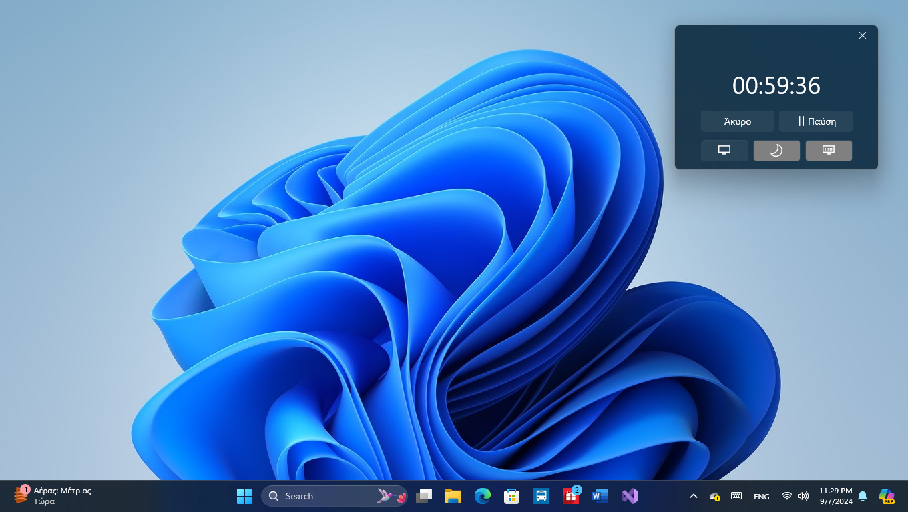
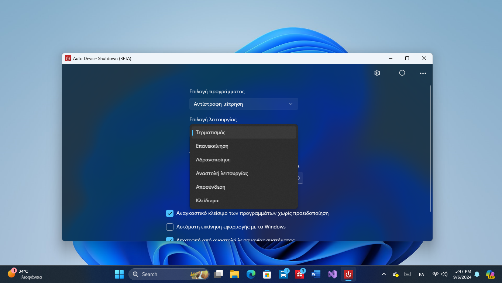
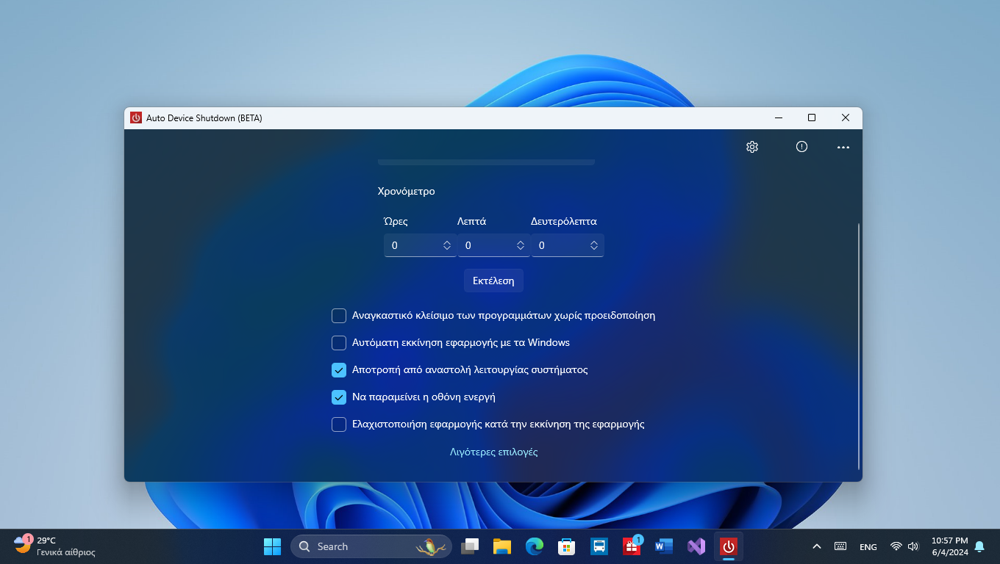

Auto Device Shutdown
Προγραμματισμός τερματισμού για Windows.
Screenshots





Περιγραφή
Το Auto Device Shutdown σου επιτρέπει να προγραμματίζεις εύκολα τον τερματισμό, την επανεκκίνηση, την αποσύνδεση ή την αδρανοποίηση του υπολογιστή σου.
Διαθέτει απλό και καθαρό περιβάλλον, λειτουργεί διακριτικά στο παρασκήνιο και σου παρέχει ειδοποιήσεις πριν την εκτέλεση της επιλεγμένης ενέργειας.
Χαρακτηριστικά
- Προγραμματισμός ενεργειών συστήματος – Τερματισμός, επανεκκίνηση, αποσύνδεση ή αδρανοποίηση.
- Χρονικός προγραμματισμός – Ορισμός μετά από ώρες, λεπτά και δευτερόλεπτα.
- Προγραμματισμός σε συγκεκριμένη ημερομηνία & ώρα – Π.χ. 03/01/2026 στις 22:25.
- Λειτουργία στο παρασκήνιο – Η εφαρμογή συνεχίζει να λειτουργεί χωρίς να ενοχλεί.
- Εικονίδιο στη γραμμή εργασιών – Γρήγορη πρόσβαση και έλεγχος από το κάτω μέρος της οθόνης.
- Always On Top – Το παράθυρο μπορεί να παραμένει πάντα ορατό.
- Μικρό παράθυρο αντίστροφης μέτρησης – Εμφάνιση του χρόνου που απομένει.
- Ειδοποιήσεις πριν την εκτέλεση – Ενημέρωση σε προκαθορισμένα χρονικά σημεία (π.χ. 10 και 5 λεπτά πριν).
- Αναγκαστικό κλείσιμο εφαρμογών – Όπου υποστηρίζεται (τερματισμός, επανεκκίνηση, αποσύνδεση).
- Διατήρηση ενεργής οθόνης – Αποτροπή απενεργοποίησης της οθόνης.
- Παράκαμψη αδρανοποίησης συστήματος – Αποφυγή αυτόματης αναστολής λειτουργίας.
- Πολυγλωσσική υποστήριξη – Ελληνικά, Αγγλικά, Γαλλικά, Αλβανικά, Πολωνικά, Γερμανικά και Ρωσικά.
- Σχεδιασμένο για Windows